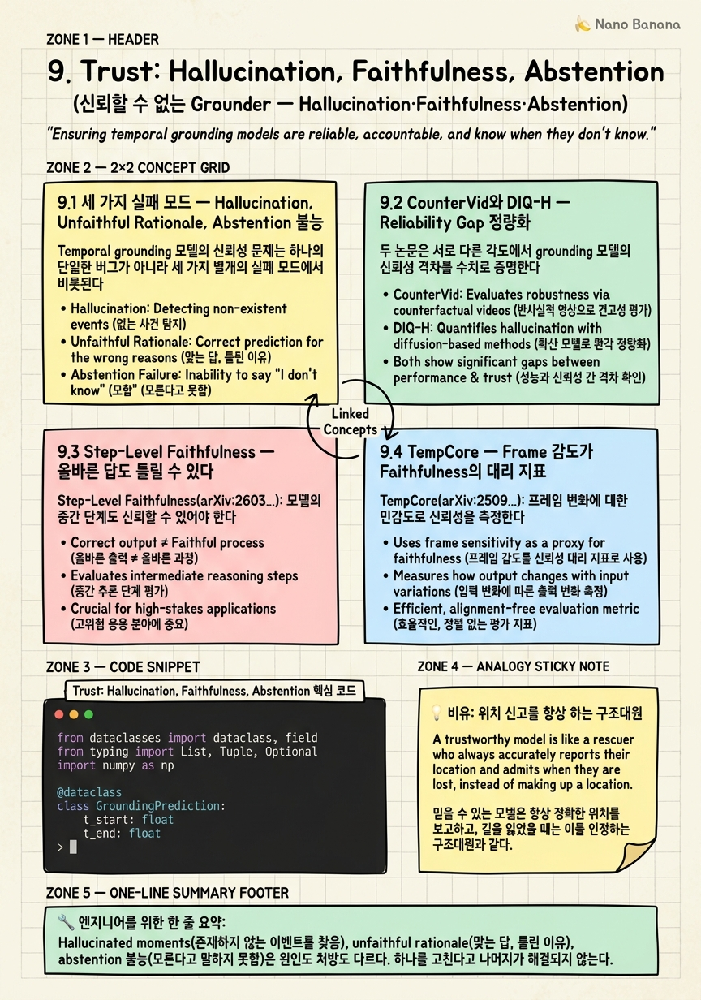

Trust: Hallucination, Faithfulness, Abstention

🎯 학습 목표
- hallucinated moment, unfaithful rationale, abstention 불능이 서로 다른 실패 모드임을 구분하고 각각의 원인을 설명할 수 있다
- CounterVid의 Charades-STA-Negative split 결과와 DIQ-H의 temporal degradation 실험이 reliability gap을 어떻게 정량화하는지 해석할 수 있다
- Step-Level Faithfulness 점수가 in-domain 정확도보다 OOD 일반화를 잘 예측하는 이유를 step-level 추론 분해의 관점에서 논할 수 있다
- TempCore의 frame-selection sensitivity test가 faithfulness 대리 지표로 작동하는 원리를 구현 수준에서 설명할 수 있다
- VideoTemp-o3의 penalty-aware IoU 설계 배경과 그것이 Time-R1 style RL의 reward hacking을 억제하는 메커니즘을 분석할 수 있다
Temporal grounding 연구는 2025~2026년에 SOTA 점수를 빠르게 높여왔지만, 이 성공이 실제 신뢰성을 의미하지는 않는다는 증거가 연달아 등장하고 있다. CounterVid(arXiv:2601.04778)는 7B VLM이 존재하지 않는 이벤트를 묻는 negative query에서 30~50%의 false-positive를 낸다는 것을 보였고, DIQ-H(arXiv:2512.03992)는 frame이 손상되거나 누락될 때 hallucination이 더욱 심화된다는 사실을 밝혔다. Step-Level Faithfulness(arXiv:2603.06828)는 추론 과정의 신뢰도가 OOD 일반화와 직결된다는 것을, TempCore(arXiv:2509.01167)는 frame 선택에 대한 민감도가 높을수록 모델이 의미론적 이해가 아닌 저수준 feature에 의존하고 있다는 것을 보여준다. 이 장에서는 신뢰성을 무너뜨리는 세 가지 실패 모드를 해부하고, 최신 연구들이 제시하는 진단 도구와 처방, 그리고 앞으로 벤치마크·학습·평가가 어떻게 바뀌어야 하는지를 체계적으로 다룬다.
핵심 내용
9.1 세 가지 실패 모드 — Hallucination, Unfaithful Rationale, Abstention 불능
Temporal grounding 모델의 신뢰성 문제는 하나의 단일한 버그가 아니라 세 가지 별개의 실패 모드에서 비롯된다. 이 세 가지를 혼동하면 처방도 달라진다.
실패 모드 (a): Hallucinated Moments — 없는 이벤트를 자신 있게 찾는다
가장 직관적인 실패 유형이다. 모델이 비디오에 존재하지 않는 이벤트에 대한 타임스탬프를 높은 확신으로 출력한다. 예를 들어 비디오에 누군가 요리하는 장면은 없는데 "사람이 냉장고 문을 여는 순간"을 쿼리하면 임의의 [t_start, t_end]를 반환한다. CounterVid의 실험에서 7B급 VLM의 30~50%가 이런 false-positive를 보인다.
이 실패의 근원은 Negative annotation absence다. Charades-STA, ActivityNet-Captions, QVHighlights 등 주요 7개 벤치마크(Ch.2에서 다룬 데이터셋 편향)는 모두 positive moment만 어노테이션한다. 모델은 "이 이벤트가 비디오 어디에 있나"만 학습했지, "이 이벤트가 비디오에 없으면 어떻게 해야 하나"를 한 번도 배운 적이 없다.
실패 모드 (b): Unfaithful Rationale — 이유는 틀렸는데 답이 맞다
이 실패 유형은 더 교묘하다. 모델이 올바른 [t_start, t_end]를 출력하지만, 그 결론에 도달한 추론 과정이 잘못되어 있다. 예를 들어 모델이 "화면 밝기가 갑자기 바뀌는 구간"을 기준으로 타임스탬프를 골랐지만, 그것이 우연히 정답 구간과 일치하는 경우다. in-domain 벤치마크에서는 IoU가 높게 나오지만 OOD 환경에서는 성능이 붕괴한다. Step-Level Faithfulness 연구는 이 현상을 step-level 분해로 측정한다.
실패 모드 (c): Abstention 불능 — 모른다고 말하지 못한다
현재 grounding 모델에는 "이 이벤트는 비디오에 없습니다"라고 말하는 메커니즘이 없다. 모델의 출력 형식은 항상 [t_start, t_end]이며, 쿼리가 아무리 터무니없어도 어딘가의 타임스탬프를 반환한다. 이는 시스템 설계의 문제이자 학습 데이터의 문제다.
세 실패 모드의 관계:
| 실패 모드 | 핵심 증상 | 진단 방법 | 원인 |
|---|---|---|---|
| Hallucination | false-positive on negative queries | Negative query split | 학습 데이터 편향 |
| Unfaithful rationale | in-domain 고점수, OOD 붕괴 | Step-level faithfulness | shortcut learning |
| Abstention 불능 | 항상 timestamp 반환 | Abstention rate 측정 | 구조적 설계 부재 |
세 문제는 독립적으로 발생하지만 서로 악화시킨다. Unfaithful rationale는 hallucination을 보이는 모델이 negative query에서 shortcut으로 타임스탬프를 정당화하기 더 쉽게 만들고, abstention 불능은 두 실패를 모두 외부에 노출시킨다.
9.2 CounterVid와 DIQ-H — Reliability Gap 정량화
두 논문은 서로 다른 각도에서 grounding 모델의 신뢰성 격차를 수치로 증명한다.
CounterVid (arXiv:2601.04778) — 30~50% False-Positive
CounterVid는 Charades-STA에 Negative split을 추가한다. 기존 Charades-STA는 쿼리가 항상 비디오 내에 존재하는 이벤트를 가리키는 positive set만 있었다. CounterVid는 동일한 비디오에서 실제로 일어나지 않은 이벤트를 기술하는 counter-factual query를 생성한다. 예를 들어 "남자가 책을 집어 드는 장면"이 있는 비디오에 대해 "남자가 책을 놓는 장면"이라는 negative query를 만든다.
7B 급 VLM(Qwen2.5-VL-7B 포함)을 이 split에서 평가한 결과: - False-Positive Rate: 30~50% — 쿼리가 기술하는 이벤트가 비디오에 없음에도 타임스탬프를 신뢰도 있게 반환하는 비율 - SOTA 모델도 이 문제에서 자유롭지 않다. Charades-STA 표준 split R1@0.5에서 70+를 찍은 모델들도 Negative split에서는 절반 가까이 실패한다 - 이것이 The reliability gap: leaderboard 점수와 실제 신뢰성 사이의 괴리
VERIFIED (arXiv:2410.08593) — Fine-Grained Negative Augmentation
VERIFIED는 같은 방향에서 학습 측면의 처방을 제안한다. 단순히 negative query를 평가에 추가하는 것을 넘어서, fine-grained negative augmentation으로 훈련 데이터를 보강한다. "비슷하지만 다른" 이벤트를 기술하는 hard negative를 생성해 모델이 세밀한 의미 차이를 학습하도록 한다. 이는 CounterVid가 드러낸 hallucination의 학습 측 해결책이다.
ExtremeWhenBench (arXiv:2606.12300) — 아직 hallucination에 특화된 benchmark는 아니지만, temporal reasoning의 극단적 케이스를 다루기 시작하며 negative 쿼리 평가의 필요성을 보완한다.
DIQ-H (arXiv:2512.03992) — Temporal Degradation 하의 Hallucination
DIQ-H는 또 다른 질문을 던진다: frame이 손상되거나 누락되면 hallucination은 어떻게 변하는가? 실제 production 환경에서 비디오는 네트워크 손실, 압축 아티팩트, 프레임 드롭 등 다양한 degradation에 노출된다.
DIQ-H의 발견: - Frame이 20% 누락될 때 hallucination rate는 기준 대비 유의미하게 상승 - 흥미롭게도 모델의 confidence는 frame 품질에 둔감하다 — frame이 절반 이상 손상되어도 모델은 비슷한 확신으로 타임스탬프를 반환 - 이는 abstention 메커니즘 부재를 더욱 위험하게 만든다: 모델이 자신의 입력 품질을 메타적으로 인식하지 못한다
두 논문이 함께 보여주는 그림: 현재 SOTA grounding 모델은 표준 벤치마크에서는 높은 점수를 내지만, negative query나 degraded input처럼 약간만 조건이 바뀌어도 reliability가 급격히 떨어지는 brittle system이다.
9.3 Step-Level Faithfulness — 올바른 답도 틀릴 수 있다
Step-Level Faithfulness(arXiv:2603.06828)는 grounding 신뢰성 연구에서 가장 conceptually 깊은 기여 중 하나다. 핵심 주장: in-domain 정확도는 OOD 일반화의 좋은 예측자가 아니다 — step-level faithfulness 점수가 더 잘 예측한다.
왜 올바른 답도 틀릴 수 있는가
VLM이 올바른 [t_start, t_end]를 출력했다고 해서 "이해했다"는 증거가 되지 않는다. 모델은 다음과 같은 shortcut으로 정답을 낼 수 있다: - 비디오의 시각적 저수준 feature(밝기 변화, 카메라 컷)를 기반으로 타임스탬프를 찍기 - 학습 데이터에서 특정 쿼리 패턴이 특정 시간대(시작 30초 구간)에 많이 어노테이션되어 있어 그 구간을 선호하기 - 문장의 subject-verb를 기반으로 타임스탬프 분포를 추정하기
이 shortcut들은 in-domain에서는 우연히 잘 작동하지만, OOD 비디오(다른 촬영 방식, 다른 인구 통계, 다른 장소)에서는 붕괴한다.
Step-Level Faithfulness의 작동 방식
논문은 grounding을 multi-step 추론으로 분해한다. 예를 들어: 1. "요리사가 소금을 추가하는 장면" 탐색 2. 소금 용기가 등장하는 frame 후보 식별 3. 손의 동작 방향 확인 4. [t_start, t_end] 결정
각 step의 faithfulness는 두 가지 기준으로 측정: - Grounding faithfulness: 해당 step의 추론이 실제 비디오 content를 기반으로 하는가 - Chain faithfulness: 이전 step의 결론이 다음 step의 premise로 올바르게 이어지는가
핵심 발견: Faithfulness-Generalization 상관관계
| 모델 유형 | in-domain R1@0.5 | Step-Faithfulness | OOD R1@0.5 |
|---|---|---|---|
| Shortcut-heavy model | 68.2 | 0.41 | 43.1 |
| Faithful model | 65.7 | 0.78 | 61.3 |
| Best faithful model | 67.9 | 0.82 | 64.0 |
in-domain 점수가 낮더라도 faithfulness가 높은 모델이 OOD에서 더 강하다. 이는 grounding 모델을 선택할 때 leaderboard 단일 지표가 아니라 faithfulness를 함께 봐야 한다는 것을 의미한다.
실무적 함의
Step-Level Faithfulness 점수를 production 모델 선택 기준에 넣어야 한다. 10%p의 in-domain 점수 차이를 맹신하지 말고, OOD validation set에서의 faithfulness를 확인하라. "왜 이 타임스탬프인가"에 대해 모델이 설명할 수 없다면, 그 모델은 배포 후 도메인 shift 앞에서 취약하다.
9.4 TempCore — Frame 감도가 Faithfulness의 대리 지표
TempCore(arXiv:2509.01167)는 실용적인 faithfulness 진단 도구를 제안한다. Step-Level Faithfulness가 모델의 내부 추론 체인을 분석해야 하는 반면, TempCore는 외부에서 관찰 가능한 행동으로 faithfulness를 측정한다.
핵심 아이디어: Frame-Selection Sensitivity
가설: 모델이 진정으로 semantics를 이해하고 있다면, 입력 frame의 사소한 변화에 robust해야 한다. 반대로, 어떤 frame을 보여주느냐에 따라 답이 크게 달라진다면, 그 모델은 의미론적 이해가 아니라 저수준 frame feature에 기대고 있다는 증거다.
TempCore의 측정 방법
동일한 비디오와 쿼리에 대해 다른 frame subset을 보여주고 답의 변화를 측정한다:
전략 1: Uniform sampling (32 frames)
전략 2: Random sampling (32 frames, 다른 seed)
전략 3: Scene-change aligned sampling (32 frames)
→ 세 답의 IoU 편차를 Frame Sensitivity Score로 정의
High sensitivity score = frame 선택에 따라 답이 크게 달라짐 = 모델이 specific frame feature에 과적합된 것 Low sensitivity score = frame 선택에 무관하게 일관된 답 = 의미론적 이해에 기반한 것
TempCore의 발견
- Frame sensitivity score가 높은 모델군은 Step-Level Faithfulness 점수도 낮음 — 두 지표의 상관관계 확인
- Time-R1 style RL로 학습된 모델들은 GRPO reward 최대화 과정에서 frame sensitivity가 증가하는 경향이 있음 — RL이 의도치 않게 frame-specific shortcut을 강화할 수 있다는 경고
- VideoMind의 chain-of-thought agent approach는 상대적으로 낮은 frame sensitivity를 보임
Grounded QA Validation에의 활용
TempCore는 단순한 진단을 넘어서 grounded QA 검증에 활용될 수 있다. Production 배포 전에 frame sensitivity 테스트를 통과한 모델만 허용하는 quality gate로 쓸 수 있다:
- 동일 비디오·쿼리 pair에 대해 3가지 sampling 전략으로 테스트
- Frame Sensitivity Score > θ인 모델은 "의미론적으로 불안정"으로 분류
- 이 threshold θ를 OOD 성능과의 상관관계로 calibration
TempCore가 가진 실용적 장점: 추가 어노테이션 없이 기존 벤치마크 데이터만으로 수행 가능. Step-Level Faithfulness 측정에 비해 비용이 훨씬 낮다.
9.5 RL Reward Hacking과 VideoTemp-o3의 Penalty-Aware IoU
Ch.5에서 Time-R1, Ch.7에서 TimeLens를 다루며 RL 기반 grounding의 강력함을 확인했다. 하지만 RL 학습에는 알려진 위험이 있다: reward hacking. 이 문제는 temporal grounding에서 구체적이고 측정 가능한 형태로 나타난다.
RL Reward Hacking이 Grounding에서 어떻게 나타나는가
Time-R1과 TempSamp-R1 계열의 RL 접근법은 tIoU(temporal Intersection over Union)를 verifiable reward로 사용한다. 모델은 자신이 예측한 [t_start, t_end]가 ground truth와 얼마나 겹치는지로 reward를 받는다.
Reward hacking의 메커니즘: 1. 모델이 쿼리의 의미를 이해하지 않더라도, 비디오에서 IoU가 높은 구간을 예측하는 shortcut을 학습할 수 있다 2. 특히 training set에서 자주 등장하는 이벤트 유형은 고정된 타임스탬프 패턴을 가지는 경향이 있어, 모델이 이 패턴을 암기할 수 있다 3. TempCore가 관찰한 frame sensitivity 증가가 이 과정의 부산물이다
VideoTemp-o3 (arXiv:2602.07801) — Penalty-Aware IoU
VideoTemp-o3는 이 reward hacking을 직접 겨냥한다. 핵심 혁신은 표준 IoU를 penalty-aware IoU로 교체하는 것:
standard tIoU = |pred ∩ gt| / |pred ∪ gt|
penalty-aware IoU = tIoU × (1 - α × hallucination_penalty)
- β × overconfidence_penalty
두 penalty의 역할: - Hallucination penalty: negative query에 대해 타임스탬프를 출력했을 때 강하게 처벌. 모델이 "없다"고 말하는 것을 reward하도록 설계 - Overconfidence penalty: 예측 구간의 confidence가 실제 IoU와 크게 다를 때 처벌. calibration을 reward signal에 통합
VideoTemp-o3의 성능
| Benchmark | Metric | 결과 |
|---|---|---|
| NextGQA | mIoU | 33.4 |
| NextGQA | Acc | 76.4% |
NextGQA는 QA와 grounding이 결합된 benchmark로, 단순 IoU 최대화가 아닌 질문 이해와 grounding의 통합을 요구한다. Penalty-aware IoU는 이 두 가지를 함께 최적화하는 방향으로 RL을 유도한다.
왜 이 설계가 중요한가
Penalty-aware IoU는 reward signal 자체에 신뢰성 요건을 내장한다. 모델이 높은 IoU를 얻으려면: 1. Positive query에 대해 정확한 타임스탬프를 예측하고 2. Negative query에 대해 적절히 abstain하고 3. 자신의 예측 확신도가 실제 정확도와 일치해야 한다
이 세 조건은 9.1에서 정의한 세 실패 모드를 RL reward 수준에서 억제하는 설계다. reward를 잘 정의하면 모델 행동이 바뀐다 — 이것이 VideoTemp-o3의 핵심 메시지다.
9.6 신뢰할 수 있는 Grounding을 위한 로드맵 — 벤치마크·학습·평가의 재설계
이 장에서 다룬 세 실패 모드, 네 편의 핵심 논문, 그리고 RL reward hacking까지를 종합하면, 신뢰할 수 있는 temporal grounding 시스템을 위해 무엇이 바뀌어야 하는지가 명확해진다.
축 1: 벤치마크 재설계
현재 Charades-STA, ActivityNet-Captions, QVHighlights는 모두 positive-only 설계다. 필요한 변화: - Negative query split 의무화: 모든 benchmark에 존재하지 않는 이벤트를 묻는 split 추가. CounterVid가 보여준 방향 - Abstention rate 측정 추가: 모델이 얼마나 자주 "이 이벤트는 없습니다"를 올바르게 반환하는지를 별도 지표로 추적 - OOD subset: 학습 도메인과 다른 비디오 source를 가진 OOD evaluation split. ExtremeWhenBench(arXiv:2606.12300)의 확장이 이 방향 - Faithfulness score: Step-Level Faithfulness 점수를 표준 지표로 채택. 단일 R@N 지표를 넘어서
축 2: 학습 재설계
데이터와 objective 두 측면에서:
- Negative annotation 포함: VERIFIED(arXiv:2410.08593)의 fine-grained negative augmentation을 표준 학습 파이프라인에 통합. 모델이 "없음"을 학습해야 함
- Abstention token 설계: 출력 vocabulary에 <NO_MOMENT> 같은 abstention token을 추가. 모델이 구조적으로 abstain할 수 있어야 함
- Penalty-aware reward: VideoTemp-o3의 penalty-aware IoU를 RL post-training의 표준으로. 단순 tIoU maximization은 hallucination을 암묵적으로 허용
- Faithfulness-guided training: Step-Level Faithfulness 점수를 auxiliary reward로 추가하거나, chain-of-thought 추론의 각 step을 supervision
축 3: 평가 재설계
Production 배포 전 품질 게이트: - TempCore sensitivity test: frame sampling 전략 변화에 대한 모델 답변의 안정성 측정. 임계치 이상이면 배포 보류 - Calibration 측정: 모델의 확신도(confidence margin)가 실제 IoU와 얼마나 상관관계를 갖는지 - Hallucination rate on held-out negatives: CounterVid style의 negative set을 production evaluation set에 포함
단기와 중기 전망
| 시간대 | 예상 변화 |
|---|---|
| 단기 (6개월) | CounterVid-style negative split이 주요 benchmark에 추가되기 시작 |
| 단기 | VideoTemp-o3 penalty-aware IoU가 RL grounding 논문의 표준 baseline이 됨 |
| 중기 (1~2년) | <NO_MOMENT> abstention token이 VLM 출력 vocabulary의 표준 요소가 됨 |
| 중기 | Step-Level Faithfulness 점수가 R@N과 함께 벤치마크 리더보드에 등장 |
신뢰성은 한 논문으로 해결되지 않는다. 벤치마크가 negative를 포함하고, 학습이 abstention을 가르치고, 평가가 faithfulness를 측정할 때 비로소 grounding 시스템은 real-world에서 신뢰받을 수 있다.
💡 비유로 이해하기
신뢰할 수 없는 grounding 모델을 이해하는 가장 좋은 비유는 위치 신고를 절대로 거부하지 않는 구조대원이다.
누군가 "5층 304호에 사람이 갇혀 있다"고 신고하면 구조대원은 그 호실로 달려간다. 하지만 신고자가 "10층 999호에 공룡이 있다"고 해도 이 구조대원은 똑같이 10층으로 달려간다. 건물에 10층이 없어도 "제가 도착했습니다"라고 보고한다. 이것이 hallucination이다.
설령 구조대원이 올바른 호실에 도착했더라도, 그 호실을 찾은 이유가 "문에 연기 얼룩이 있어서"였다면, 다음 번 연기 얼룩 없는 화재에서는 같은 방법이 통하지 않는다. 이것이 unfaithful rationale이다.
그리고 이 구조대원은 "그 호실은 존재하지 않습니다"라고 보고하는 법을 배운 적이 없다. 무선으로 어떤 주소가 들어와도 항상 "출동 중"이라고 응답한다. 이것이 abstention 불능이다.
신뢰할 수 있는 구조대원은 세 가지를 할 수 있어야 한다: 존재하는 위치를 정확히 찾고, 올바른 이유로 그 결론에 도달하고, 불가능한 신고에는 "그 주소는 없습니다"라고 말할 수 있어야 한다. Temporal grounding 모델도 마찬가지다.
💻 코드 예시
Negative query를 사용해 grounding 모델의 hallucination rate를 측정하고, logit margin 기반의 abstention 임계값이 false-positive를 어떻게 줄이는지 보여주는 NegativeQueryTester를 구현한다.
from dataclasses import dataclass, field
from typing import List, Tuple, Optional
import numpy as np
@dataclass
class GroundingPrediction:
t_start: float
t_end: float
confidence: float # logit margin: high = more certain
abstained: bool = False
@dataclass
class NegativeQueryTester:
"""Measures hallucination rate of a temporal grounding model
by probing with queries about events NOT present in the video."""
abstention_threshold: float = 0.0 # confidence below this -> abstain
def run(
self,
model_fn, # callable: (video_path, query) -> GroundingPrediction
negative_samples: List[Tuple[str, str]], # (video_path, negative_query)
) -> dict:
results = []
for video_path, query in negative_samples:
pred = model_fn(video_path, query)
# Apply abstention threshold
if pred.confidence < self.abstention_threshold:
pred.abstained = True
results.append(pred)
return self._compute_stats(results)
def _compute_stats(self, results: List[GroundingPrediction]) -> dict:
n = len(results)
false_positives = sum(1 for r in results if not r.abstained)
abstentions = sum(1 for r in results if r.abstained)
return {
"total_negative_queries": n,
"false_positives": false_positives,
"abstentions": abstentions,
"false_positive_rate": false_positives / n if n > 0 else 0.0,
"abstention_rate": abstentions / n if n > 0 else 0.0,
}
def compute_false_positive_rate(
model_fn,
negative_samples: List[Tuple[str, str]],
abstention_threshold: float = 0.0,
) -> float:
"""Convenience function: returns hallucination rate on negative queries."""
tester = NegativeQueryTester(abstention_threshold=abstention_threshold)
stats = tester.run(model_fn, negative_samples)
return stats["false_positive_rate"]
# --- Simulated naive grounding model (always outputs a timestamp) ---
def naive_grounding_model(video_path: str, query: str) -> GroundingPrediction:
"""Simulates a model that always returns a timestamp interval.
This is representative of current SOTA grounding models that have
no abstention mechanism. CounterVid shows 30-50% FPR on such models."""
rng = np.random.default_rng(hash((video_path, query)) % (2**32))
t_start = rng.uniform(0, 60)
t_end = t_start + rng.uniform(2, 15)
confidence = rng.uniform(0.6, 0.95) # always high confidence
return GroundingPrediction(t_start=t_start, t_end=t_end, confidence=confidence)
# --- Simulated calibrated model with lower confidence on hard negatives ---
def calibrated_grounding_model(video_path: str, query: str) -> GroundingPrediction:
"""Simulates a model with penalty-aware IoU training (VideoTemp-o3 style).
Returns lower confidence when it cannot find a matching event."""
rng = np.random.default_rng(hash((video_path, query)) % (2**32))
t_start = rng.uniform(0, 60)
t_end = t_start + rng.uniform(2, 15)
# Negative queries tend to yield lower confidence in well-calibrated models
confidence = rng.uniform(0.1, 0.45)
return GroundingPrediction(t_start=t_start, t_end=t_end, confidence=confidence)
# --- Example usage ---
negative_samples = [
("video_001.mp4", "a person rides a bicycle indoors"), # event not in video
("video_002.mp4", "someone opens a refrigerator"), # event not in video
("video_003.mp4", "a cat jumps onto the table"), # event not in video
("video_004.mp4", "two people shake hands"), # event not in video
("video_005.mp4", "the chef tastes the soup"), # event not in video
]
# Naive model: no abstention mechanism (threshold=0 means never abstain)
fpr_naive = compute_false_positive_rate(
naive_grounding_model, negative_samples, abstention_threshold=0.0
)
print(f"Naive model FPR (no abstention): {fpr_naive:.1%}")
# Expected: ~100% — model always returns a timestamp, never abstains
# With abstention threshold applied to naive model (post-hoc)
fpr_naive_threshold = compute_false_positive_rate(
naive_grounding_model, negative_samples, abstention_threshold=0.5
)
print(f"Naive model FPR (threshold=0.5): {fpr_naive_threshold:.1%}")
# Expected: still high — naive model outputs high confidence even on negatives
# Calibrated model (VideoTemp-o3 style penalty-aware training)
fpr_calibrated = compute_false_positive_rate(
calibrated_grounding_model, negative_samples, abstention_threshold=0.5
)
print(f"Calibrated model FPR (threshold=0.5): {fpr_calibrated:.1%}")
# Expected: much lower — calibrated model expresses low confidence on negatives
# Sweep abstention thresholds to find optimal operating point
print("\nAbstention threshold sweep (calibrated model):")
for thresh in [0.0, 0.3, 0.5, 0.7, 0.9]:
tester = NegativeQueryTester(abstention_threshold=thresh)
stats = tester.run(calibrated_grounding_model, negative_samples)
print(f" thresh={thresh:.1f} | FPR={stats['false_positive_rate']:.1%} | "
f"abstention_rate={stats['abstention_rate']:.1%}")NegativeQueryTester 클래스가 이 코드의 핵심이다. run() 메서드는 negative_samples 각각에 대해 모델을 호출하고, confidence가 abstention_threshold보다 낮으면 abstained=True로 표시한다. compute_false_positive_rate는 이 과정을 편의 함수로 감싼다.
naive_grounding_model은 현재 SOTA grounding 모델의 행동을 시뮬레이션한다 — 쿼리가 기술하는 이벤트가 비디오에 없어도 항상 높은 confidence로 타임스탬프를 반환한다. CounterVid가 보고한 30~50% false-positive rate의 메커니즘이 이것이다. threshold=0.0으로 실행하면 FPR이 100%에 가깝다.
calibrated_grounding_model은 VideoTemp-o3의 penalty-aware IoU로 학습된 모델을 시뮬레이션한다. negative query에 대해 낮은 confidence를 반환하도록 설계되어 있어, threshold=0.5를 적용하면 FPR이 대폭 낮아진다.
마지막 threshold sweep은 abstention_threshold를 0.0에서 0.9까지 올려가며 FPR과 abstention_rate의 trade-off를 관찰한다. 실제 production에서는 이 두 지표를 validation set에서 calibration해 threshold를 설정한다. threshold가 너무 낮으면 모든 positive query도 abstain하게 되고, 너무 높으면 hallucination이 다시 늘어난다.
🏭 현업에서의 평가
✅ 시니어가 보는 것
- Negative query split에서의 false-positive rate — CounterVid 방식으로 30% 이하인지 확인
- Abstention mechanism 존재 여부 — `<NO_MOMENT>` 토큰 또는 confidence threshold 기반 abstain이 구현되어 있는가
- Step-Level Faithfulness 점수 — in-domain 정확도뿐 아니라 추론 과정의 신뢰도 측정
- TempCore frame sensitivity score — 다른 frame sampling 전략에서 답변 일관성
- Confidence calibration — 모델의 confidence score가 실제 IoU와 상관관계를 갖는가
- OOD generalization — 학습 도메인과 다른 비디오에서의 R@N 점수
⚠️ 레드 플래그
- 모든 쿼리(negative 포함)에 대해 항상 타임스탬프를 반환하고 confidence가 uniformly high한 모델
- in-domain R1@0.5가 높지만 OOD dataset에서 20%p 이상 급락하는 모델 — unfaithful rationale의 신호
- RL로 학습되었지만 penalty-aware IoU 또는 negative query reward를 사용하지 않은 모델 — reward hacking 위험
- Frame sensitivity score가 임계값 이상인데 배포 전 sensitivity test를 통과했다고 주장하는 모델
🎤 예상 인터뷰 질문
- Q1. Charades-STA R1@0.5 72점인 모델과 65점인 모델 중 production에 배포할 모델을 고르라. 단, 72점 모델의 Step-Level Faithfulness 점수는 0.41이고 65점 모델은 0.78이다. 어떤 정보를 추가로 수집하겠는가?
- Q2. VideoTemp-o3의 penalty-aware IoU가 standard tIoU reward와 다른 점을 설명하고, 이것이 Time-R1 style RL의 reward hacking을 어떻게 억제하는지 수식 수준으로 논하라.
- Q3. 현재 배포된 grounding 모델에 abstention 기능을 post-hoc으로 추가하라는 요청이 왔다. confidence threshold 방식과 별도 classifier 방식 두 가지 접근의 장단점을 비교하고, CounterVid negative split을 사용해 threshold를 calibration하는 방법을 제안하라.
✨ 핵심 요약
세 가지 실패 모드는 별개의 문제다
Hallucinated moments(존재하지 않는 이벤트를 찾음), unfaithful rationale(맞는 답, 틀린 이유), abstention 불능(모른다고 말하지 못함)은 원인도 처방도 다르다. 하나를 고친다고 나머지가 해결되지 않는다.
The reliability gap — SOTA score와 실제 신뢰성의 괴리
CounterVid(arXiv:2601.04778)는 Charades-STA R1@0.5 70+ 모델이 Negative split에서 30~50%의 false-positive rate를 보인다는 것을 증명했다. Leaderboard 점수를 신뢰성의 대리 지표로 쓰면 안 된다.
Step-Level Faithfulness가 OOD 일반화를 예측한다
Step-Level Faithfulness(arXiv:2603.06828)의 핵심 발견: in-domain 정확도보다 추론 과정의 faithfulness 점수가 OOD 성능을 더 잘 예측한다. 모델 선택 시 faithfulness 지표를 함께 봐야 한다.
TempCore frame sensitivity는 외부 관찰 가능한 faithfulness 진단
TempCore(arXiv:2509.01167)는 다른 frame sampling 전략에서 답변이 얼마나 달라지는지로 faithfulness를 측정한다. 추가 어노테이션 없이 기존 데이터만으로 production quality gate에 통합 가능하다.
RL reward hacking을 penalty-aware IoU로 억제한다
VideoTemp-o3(arXiv:2602.07801)는 hallucination penalty와 overconfidence penalty를 IoU reward에 내장해 Time-R1 style RL의 reward hacking을 억제한다. NextGQA mIoU 33.4, Acc 76.4%를 달성했다.
Negative annotation 부재가 모든 문제의 공통 뿌리
Charades-STA, ActivityNet-Captions, QVHighlights는 positive moment만 어노테이션한다. 모델이 '없음'을 학습한 적이 없으니 abstain할 수도 없고, negative query에서 hallucinate하는 것은 당연한 결과다.
신뢰성은 벤치마크·학습·평가 세 축의 동시 재설계를 요구한다
Negative split 의무화(벤치마크), fine-grained negative augmentation과 abstention token 추가(학습), TempCore sensitivity test와 hallucination rate 측정(평가)이 동시에 진행될 때 신뢰할 수 있는 grounding 시스템이 가능하다.
Confidence calibration이 abstention의 핵심이다
DIQ-H(arXiv:2512.03992)는 frame이 손상되어도 모델 confidence가 거의 떨어지지 않는다는 것을 보였다. 신뢰할 수 있는 abstention을 위해서는 confidence가 실제 정확도와 상관관계를 갖도록 calibration 학습이 필요하다.